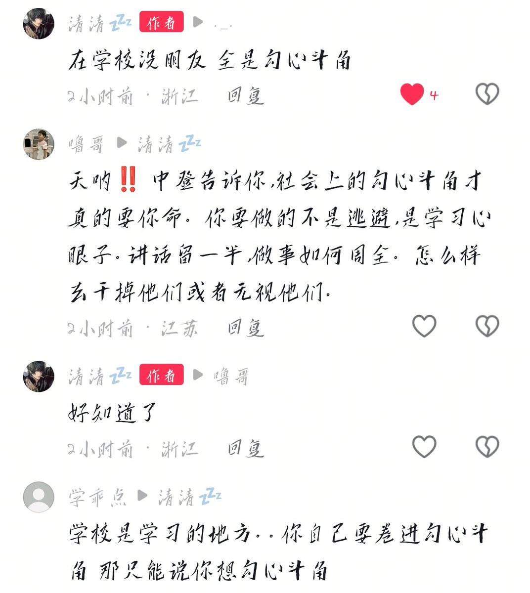

432InfantryRegiment
@432Ifantrygroup
其次，不存在完全不社会化的人，也不存在不社会化的场所。在这张人与人的关系织成的网络中，一旦泛起涟漪，无人能独善其身。正所谓“你不关心政治，政治也会来关心你。”同样，你不关心人际关系的纷争，那么纷争就会找上你，在集体里你别想独善其身。

432InfantryRegiment
@432Ifantrygroup
中登的错误之处在于把学校想象成一个与世隔绝的世外桃源，“社会”上的矛盾与学校无关。然而社会上的矛盾学校应有尽有：人与人的矛盾、上下级的矛盾、甚至阶级矛盾。而且由于学生不参与生产，矛盾由于缺乏社会生产力的最终制约，往往会呈现出一种更纯粹、无序、甚至显得更加暴烈和歇斯底里。 https://t.co/8IxHWpT255